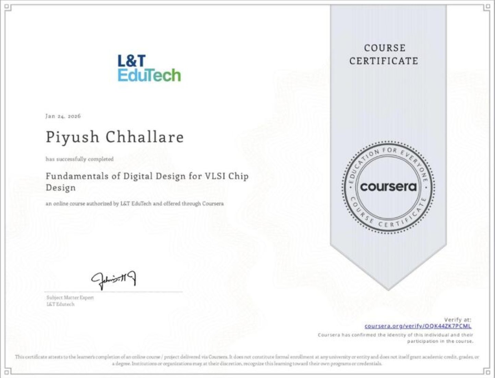
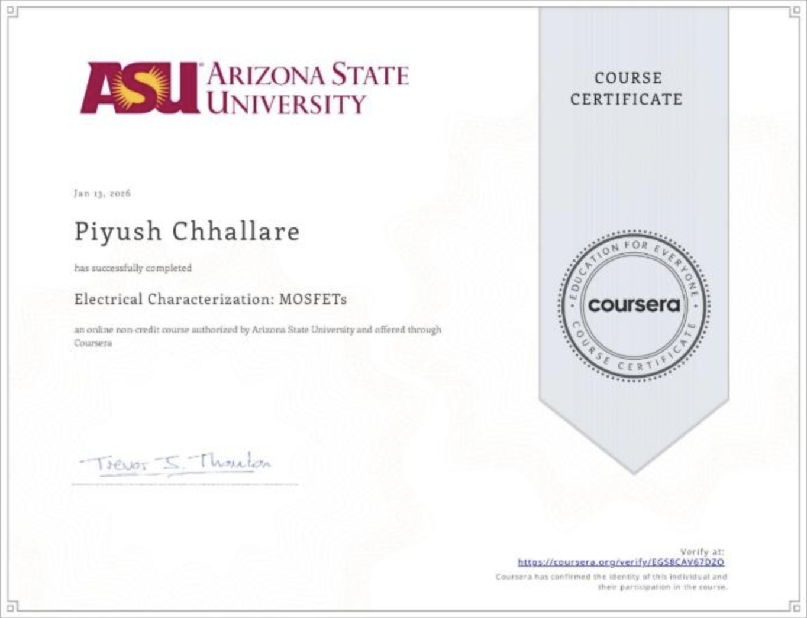
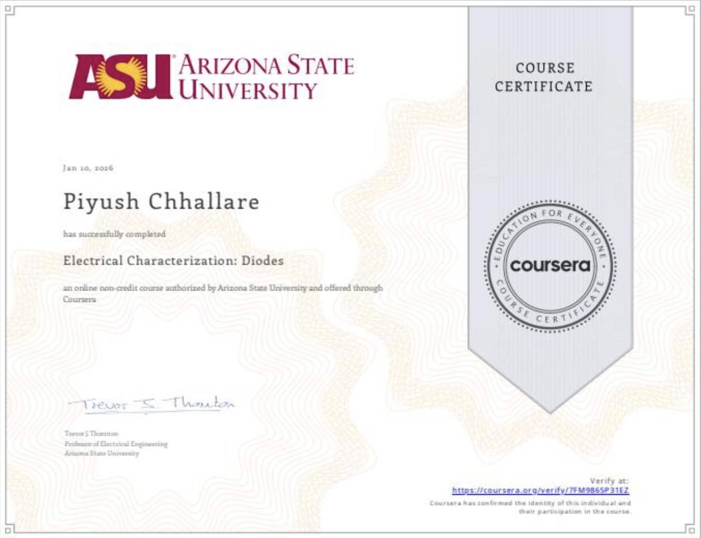
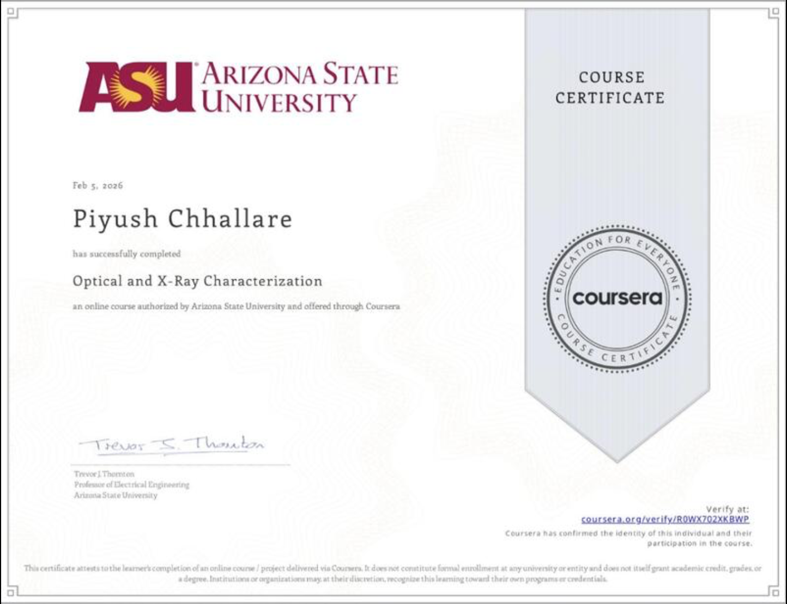
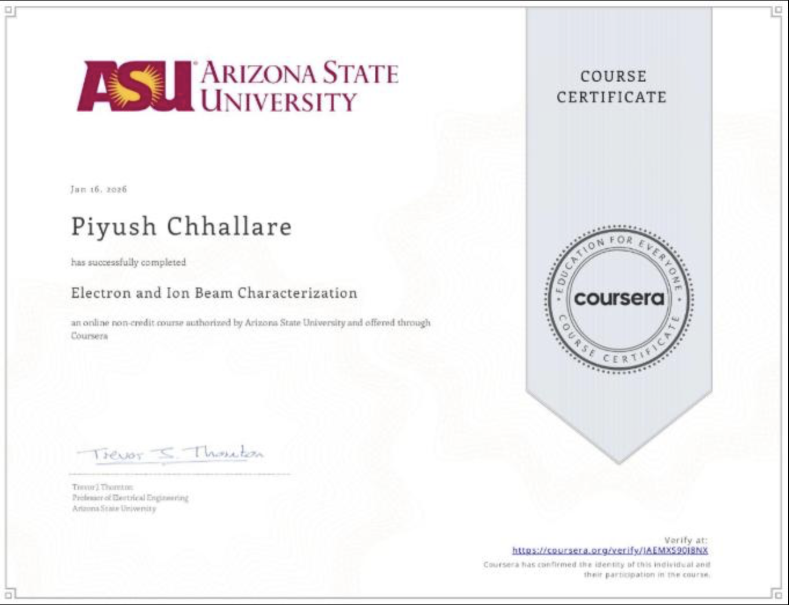
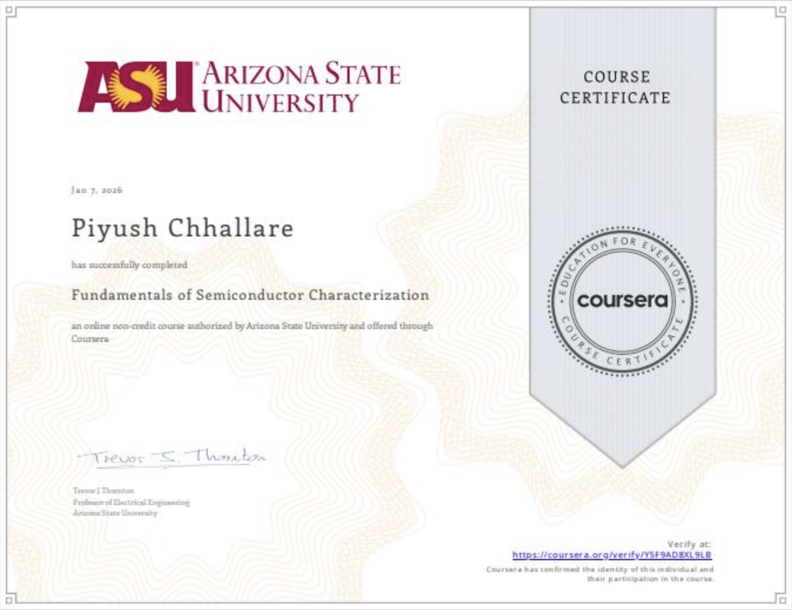
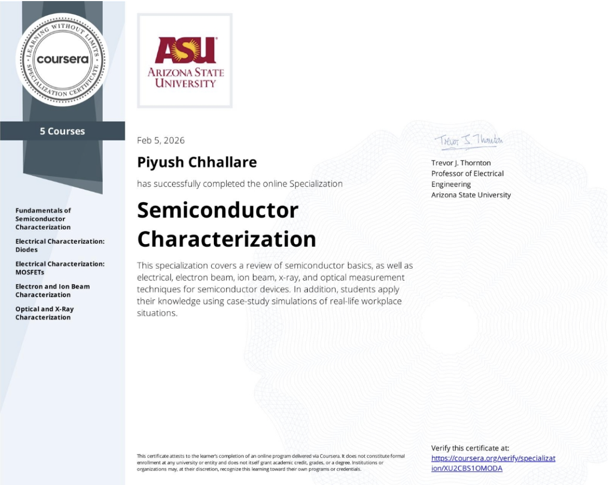
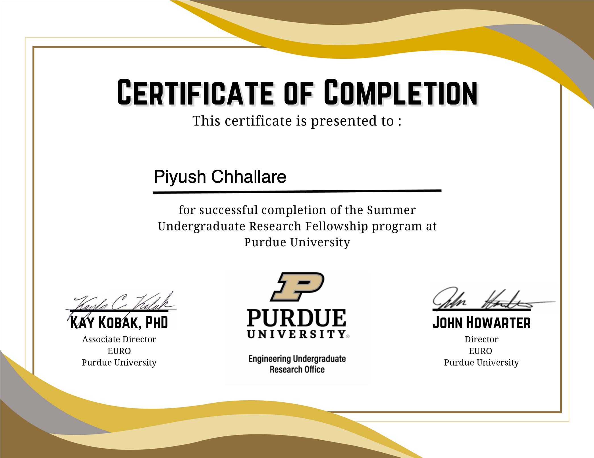

Fundamentals of Digital Design for VLSI Chip Design

Semiconductor Fabrication 101

Electrical Characterization: MOSFETs

Electrical Characterization: Diodes

Optical and X-Ray Characterization

Electron and Ion Beam Characterization

Fundamentals of Semiconductor Characterization

Semiconductor Characterization
